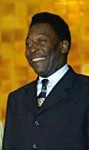

Existen utensilios y estructuras que sugieren que los chinos ya realizaban actividades deportivas hace 4000 años, entre 1066-771 a. C.7 La gimnasia parece haber sido un popular deporte en la Antigua China. Los monumentos a los emperadores indican que una cierta cantidad de deportes, incluyendo la natación y la pesca, fueron ya diseñados y regulados hace miles de años en el Antiguo Egipto.8 Otros deportes egipcios incluyen el lanzamiento de jabalina, el salto de altura y la lucha. Algunos deportes de la Antigua Persia como el arte marcial iraní de Zourkhaneh están ligados a las habilidades en la batalla.9 Entre otros deportes originales de Persia están el polo y la justa. Por otra parte, en América las culturas mesoamericanas como los mayas practicaban el llamado juego de pelota el cual a su vez era un ritual.

El futbolista Pelé fue distinguido por el COI como el «mejor deportista del siglo XX»
Una amplia variedad de deportes estaban ya establecidos en la época de la Antigua Grecia, y la cultura militar y el desarrollo de los deportes en Grecia se influyeron mutuamente. Para los griegos el deporte era una parte muy importante de su cultura, por lo que crearon los Juegos Olímpicos, una competiciónque se disputó desde el año 777 a. C. hasta el año 394 d. C. cada cuatro años en Olimpia, una pequeña población en el Peloponeso griego.10En 1896 se celebraron los primeros Juegos Olímpicos de la era moderna, en Atenas, gracias a la iniciativa del barón Pierre de Coubertin de recuperar el espíritu de los antiguos Juegos añadiendo un carácter internacional. Los Juegos Olímpicos modernos, regulados por el Comité Olímpico Internacional (COI), se han convertido en el mayor evento deportivo internacional multidisciplinario, con más de 200 naciones participantes.11
Los deportes han visto aumentada su capacidad de organización y regulación desde los tiempos de la Antigua Grecia hasta la actualidad. La industrializaciónha incrementado el tiempo de ocio de los ciudadanos en los países desarrollados, conduciendo a una mayor dedicación del tiempo a ver competiciones deportivas y más participación en actividades deportivas, facilitada por una mayor accesibilidad a instalaciones deportivas. Estas pautas continúan con la llegada de los medios de comunicación masivos. La profesionalidad en el deporte se convirtió en algo común conforme aumentaba la popularidad de los deportes y el número de aficionados que seguían las hazañas de los atletas profesionales a través de los medios de información.
En la actualidad, muchas personas hacen ejercicio para mejorar su salud y modo de vida; el deporte se considera una actividad saludable que ayuda a mantenerse en forma psicológica y físicamente, especialmente en la tercera edad.